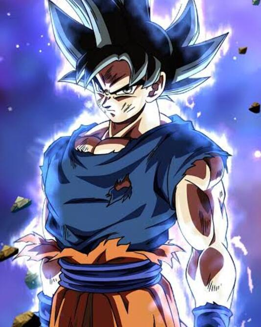

Goku

Protagonista saiyajin de gran corazón y apetito insaciable. Su pasión es entrenar intensamente para superar sus propios límites, proteger la Tierra y enfrentar a los rivales más poderosos del universo con una alegría inquebrantable.